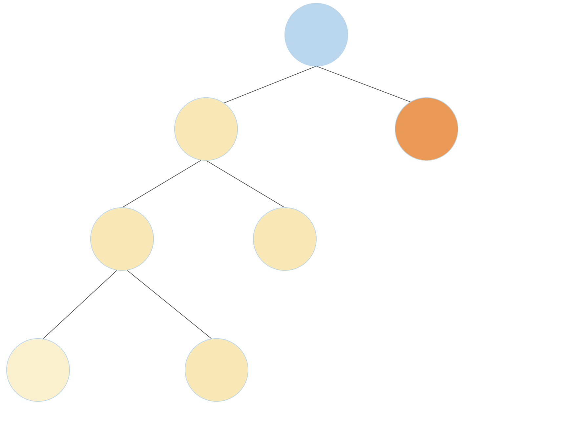
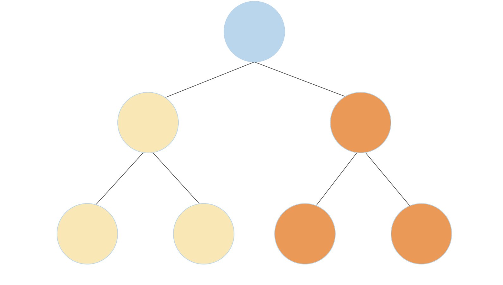

Lab 10: Midterm Review
Due by 11:59pm on Wednesday, April 5.
Starter Files
Download lab10.zip. Inside the archive, you will find starter files for the questions in this lab, along with a copy of the Ok autograder.
All Questions Are Optional
The questions in this assignment are not graded, but they are highly recommended to help you prepare for the upcoming exam. You will receive credit for this lab even if you do not complete these questions.
Recursion and Tree Recursion
Q1: Subsequences
A subsequence of a sequence S is a subset of elements from S, in the same
order they appear in S. Consider the list [1, 2, 3]. Here are a few of it's
subsequences [], [1, 3], [2], and [1, 2, 3].
Write a function that takes in a list and returns all possible subsequences of that list. The subsequences should be returned as a list of lists, where each nested list is a subsequence of the original input.
In order to accomplish this, you might first want to write a function insert_into_all
that takes an item and a list of lists, adds the item to the beginning of each nested list,
and returns the resulting list.
def insert_into_all(item, nested_list):
"""Return a new list consisting of all the lists in nested_list,
but with item added to the front of each. You can assume that
nested_list is a list of lists.
>>> nl = [[], [1, 2], [3]]
>>> insert_into_all(0, nl)
[[0], [0, 1, 2], [0, 3]]
"""
"*** YOUR CODE HERE ***"
def subseqs(s):
"""Return a nested list (a list of lists) of all subsequences of S.
The subsequences can appear in any order. You can assume S is a list.
>>> seqs = subseqs([1, 2, 3])
>>> sorted(seqs)
[[], [1], [1, 2], [1, 2, 3], [1, 3], [2], [2, 3], [3]]
>>> subseqs([])
[[]]
"""
if ________________:
________________
else:
________________
________________
Use Ok to test your code:
python3 ok -q subseqsQ2: Non-Decreasing Subsequences
Just like the last question, we want to write a function that takes a list and returns a list of lists, where each individual list is a subsequence of the original input.
This time we have another condition: we only want the subsequences for which
consecutive elements are nondecreasing. For example, [1, 3, 2] is a
subsequence of [1, 3, 2, 4], but since 2 < 3, this subsequence would not
be included in our result.
You may assume that the list passed in as s contains only nonnegative elements.
Fill in the blanks to complete the implementation of the non_decrease_subseqs
function. You may assume that the input list contains no negative elements.
You may use the provided helper function insert_into_all, which takes in an
item and a list of lists and inserts the item to the front of each list.
def non_decrease_subseqs(s):
"""Assuming that S is a list, return a nested list of all subsequences
of S (a list of lists) for which the elements of the subsequence
are strictly nondecreasing. The subsequences can appear in any order.
>>> seqs = non_decrease_subseqs([1, 3, 2])
>>> sorted(seqs)
[[], [1], [1, 2], [1, 3], [2], [3]]
>>> non_decrease_subseqs([])
[[]]
>>> seqs2 = non_decrease_subseqs([1, 1, 2])
>>> sorted(seqs2)
[[], [1], [1], [1, 1], [1, 1, 2], [1, 2], [1, 2], [2]]
"""
def subseq_helper(s, prev):
if not s:
return ____________________
elif s[0] < prev:
return ____________________
else:
a = ______________________
b = ______________________
return insert_into_all(________, ______________) + ________________
return subseq_helper(____, ____)
Use Ok to test your code:
python3 ok -q non_decrease_subseqsQ3: Number of Trees
A full binary tree is a tree where each node has either 2 branches or 0 branches, but never 1 branch.
Write a function which returns the number of unique full binary tree structures that have exactly n leaves. See the doctests for visualizations of the possible full binary tree sturctures that have 1, 2, and 3 leaves.
Hint: A full binary tree can be constructed by connecting two smaller full binary trees to a root node. If the two smaller full binary trees have
aandbleaves, the new full binary tree will havea + bleaves. For example, as shown in the first diagram below, a full binary tree with 4 leaves can be constructed by connecting a full binary tree that has three leaves (yellow) with a full binary tree that has one leaf (orange). A full binary tree with 4 leaves can also be constructed by connecting two full binary trees with 2 leaves each (second diagram) 
For those interested in combinatorics, this problem does have a closed form solution):
def num_trees(n):
"""Returns the number of unique full binary trees with exactly n leaves. E.g.,
1 2 3 3 ...
* * * *
/ \ / \ / \
* * * * * *
/ \ / \
* * * *
>>> num_trees(1)
1
>>> num_trees(2)
1
>>> num_trees(3)
2
>>> num_trees(8)
429
"""
"*** YOUR CODE HERE ***"
Use Ok to test your code:
python3 ok -q num_treesGenerators
Q4: Partition Generator
Construct the generator function partition_gen, which takes in a number n and returns an n-partition iterator. An n-partition iterator yields partitions of n, where a partition of n is a list of integers whose sum is n. The iterator should only return unique partitions; the order of numbers within a partition and the order in which partitions are returned does not matter.
Important: The skeleton code is only a suggestion; feel free to add or remove lines as you see fit.
def partition_gen(n):
"""
>>> for partition in partition_gen(4): # note: order doesn't matter
... print(partition)
[4]
[3, 1]
[2, 2]
[2, 1, 1]
[1, 1, 1, 1]
"""
def yield_helper(j, k):
if j == 0:
____________________________________________
elif ____________________________________________:
for small_part in ________________________________:
yield ____________________________________________
yield ________________________________________
yield from yield_helper(n, n)Use Ok to test your code:
python3 ok -q partition_genObjects
Mutable Lists
Q5: Trade
In the integer market, each participant has a list of positive integers to trade. When two participants meet, they trade the smallest non-empty prefix of their list of integers. A prefix is a slice that starts at index 0.
Write a function trade that exchanges the first m elements of list first
with the first n elements of list second, such that the sums of those
elements are equal, and the sum is as small as possible. If no such prefix
exists, return the string 'No deal!' and do not change either list. Otherwise
change both lists and return 'Deal!'. A partial implementation is provided.
Hint: You can mutate a slice of a list using slice assignment. To do so, specify a slice of the list
[i:j]on the left-hand side of an assignment statement and another list on the right-hand side of the assignment statement. The operation will replace the entire given slice of the list fromiinclusive tojexclusive with the elements from the given list. The slice and the given list need not be the same length.>>> a = [1, 2, 3, 4, 5, 6] >>> b = a >>> a[2:5] = [10, 11, 12, 13] >>> a [1, 2, 10, 11, 12, 13, 6] >>> b [1, 2, 10, 11, 12, 13, 6]Additionally, recall that the starting and ending indices for a slice can be left out and Python will use a default value.
lst[i:]is the same aslst[i:len(lst)], andlst[:j]is the same aslst[0:j].
def trade(first, second):
"""Exchange the smallest prefixes of first and second that have equal sum.
>>> a = [1, 1, 3, 2, 1, 1, 4]
>>> b = [4, 3, 2, 7]
>>> trade(a, b) # Trades 1+1+3+2=7 for 4+3=7
'Deal!'
>>> a
[4, 3, 1, 1, 4]
>>> b
[1, 1, 3, 2, 2, 7]
>>> c = [3, 3, 2, 4, 1]
>>> trade(b, c)
'No deal!'
>>> b
[1, 1, 3, 2, 2, 7]
>>> c
[3, 3, 2, 4, 1]
>>> trade(a, c)
'Deal!'
>>> a
[3, 3, 2, 1, 4]
>>> b
[1, 1, 3, 2, 2, 7]
>>> c
[4, 3, 1, 4, 1]
>>> d = [1, 1]
>>> e = [2]
>>> trade(d, e)
'Deal!'
>>> d
[2]
>>> e
[1, 1]
"""
m, n = 1, 1
equal_prefix = lambda: ______________________
while _______________________________:
if __________________:
m += 1
else:
n += 1
if equal_prefix():
first[:m], second[:n] = second[:n], first[:m]
return 'Deal!'
else:
return 'No deal!'Use Ok to test your code:
python3 ok -q tradeQ6: Shuffle
Define a function shuffle that takes a sequence with an even number of
elements (cards) and creates a new list that interleaves the elements
of the first half with the elements of the second half.
To interleave two sequences s0 and s1 is to create a new sequence such that the new sequence contains (in this order) the first element of s0, the first element of s1, the second element of s0, the second element of s1, and so on.
Note: If you're running into an issue where the special heart / diamond / spades / clubs symbols are erroring in the doctests, feel free to copy paste the below doctests into your file as these don't use the special characters and should not give an "illegal multibyte sequence" error.
def card(n):
"""Return the playing card numeral as a string for a positive n <= 13."""
assert type(n) == int and n > 0 and n <= 13, "Bad card n"
specials = {1: 'A', 11: 'J', 12: 'Q', 13: 'K'}
return specials.get(n, str(n))
def shuffle(cards):
"""Return a shuffled list that interleaves the two halves of cards.
>>> shuffle(range(6))
[0, 3, 1, 4, 2, 5]
>>> suits = ['H', 'D', 'S', 'C']
>>> cards = [card(n) + suit for n in range(1,14) for suit in suits]
>>> cards[:12]
['AH', 'AD', 'AS', 'AC', '2H', '2D', '2S', '2C', '3H', '3D', '3S', '3C']
>>> cards[26:30]
['7S', '7C', '8H', '8D']
>>> shuffle(cards)[:12]
['AH', '7S', 'AD', '7C', 'AS', '8H', 'AC', '8D', '2H', '8S', '2D', '8C']
>>> shuffle(shuffle(cards))[:12]
['AH', '4D', '7S', '10C', 'AD', '4S', '7C', 'JH', 'AS', '4C', '8H', 'JD']
>>> cards[:12] # Should not be changed
['AH', 'AD', 'AS', 'AC', '2H', '2D', '2S', '2C', '3H', '3D', '3S', '3C']
"""
assert len(cards) % 2 == 0, 'len(cards) must be even'
half = _______________
shuffled = []
for i in _____________:
_________________
_________________
return shuffledUse Ok to test your code:
python3 ok -q shuffleLinked Lists
Q7: Insert
Implement a function insert that takes a Link, a value, and an
index, and inserts the value into the Link at the given index.
You can assume the linked list already has at least one element. Do not
return anything -- insert should mutate the linked list.
Note: If the index is out of bounds, you should raise an
IndexErrorwith:raise IndexError('Out of bounds!')
def insert(link, value, index):
"""Insert a value into a Link at the given index.
>>> link = Link(1, Link(2, Link(3)))
>>> print(link)
<1 2 3>
>>> other_link = link
>>> insert(link, 9001, 0)
>>> print(link)
<9001 1 2 3>
>>> link is other_link # Make sure you are using mutation! Don't create a new linked list.
True
>>> insert(link, 100, 2)
>>> print(link)
<9001 1 100 2 3>
>>> insert(link, 4, 5)
Traceback (most recent call last):
...
IndexError: Out of bounds!
"""
"*** YOUR CODE HERE ***"
Use Ok to test your code:
python3 ok -q insertQ8: Deep Linked List Length
A linked list that contains one or more linked lists as elements is called a
deep linked list. Write a function deep_len that takes in a (possibly deep)
linked list and returns the deep length of that linked list. The deep length of
a linked list is the total number of non-link elements in the list, as well as the
total number of elements contained in all contained lists. See the function's doctests
for examples of the deep length of linked lists.
Hint: Use
isinstanceto check if something is an instance of an object.
def deep_len(lnk):
""" Returns the deep length of a possibly deep linked list.
>>> deep_len(Link(1, Link(2, Link(3))))
3
>>> deep_len(Link(Link(1, Link(2)), Link(3, Link(4))))
4
>>> levels = Link(Link(Link(1, Link(2)), \
Link(3)), Link(Link(4), Link(5)))
>>> print(levels)
<<<1 2> 3> <4> 5>
>>> deep_len(levels)
5
"""
if ______________:
return 0
elif ______________:
return 1
else:
return _________________________
Use Ok to test your code:
python3 ok -q deep_lenQ9: Linked Lists as Strings
Kevin and Jerry like different ways of displaying the linked list
structure in Python. While Kevin likes box and pointer diagrams,
Jerry prefers a more futuristic way. Write a function
make_to_string that returns a function that converts the
linked list to a string in their preferred style.
Hint: You can convert numbers to strings using the str function,
and you can combine strings together using +.
>>> str(4)
'4'
>>> 'cs ' + str(61) + 'a'
'cs 61a'def make_to_string(front, mid, back, empty_repr):
""" Returns a function that turns linked lists to strings.
>>> kevins_to_string = make_to_string("[", "|-]-->", "", "[]")
>>> jerrys_to_string = make_to_string("(", " . ", ")", "()")
>>> lst = Link(1, Link(2, Link(3, Link(4))))
>>> kevins_to_string(lst)
'[1|-]-->[2|-]-->[3|-]-->[4|-]-->[]'
>>> kevins_to_string(Link.empty)
'[]'
>>> jerrys_to_string(lst)
'(1 . (2 . (3 . (4 . ()))))'
>>> jerrys_to_string(Link.empty)
'()'
"""
def printer(lnk):
if ______________:
return _________________________
else:
return _________________________
return printerUse Ok to test your code:
python3 ok -q make_to_stringTrees
Q10: Reverse Other
Write a function reverse_other that mutates the tree such that labels on
every other (odd-depth) level are reversed. For example,
Tree(1,[Tree(2, [Tree(4)]), Tree(3)]) becomes Tree(1,[Tree(3, [Tree(4)]), Tree(2)]).
Notice that the nodes themselves are not reversed; only the labels are.
def reverse_other(t):
"""Mutates the tree such that nodes on every other (odd-depth)
level have the labels of their branches all reversed.
>>> t = Tree(1, [Tree(2), Tree(3), Tree(4)])
>>> reverse_other(t)
>>> t
Tree(1, [Tree(4), Tree(3), Tree(2)])
>>> t = Tree(1, [Tree(2, [Tree(3, [Tree(4), Tree(5)]), Tree(6, [Tree(7)])]), Tree(8)])
>>> reverse_other(t)
>>> t
Tree(1, [Tree(8, [Tree(3, [Tree(5), Tree(4)]), Tree(6, [Tree(7)])]), Tree(2)])
"""
"*** YOUR CODE HERE ***"
Use Ok to test your code:
python3 ok -q reverse_otherEfficiency
Q11: Efficiency Practice
Choose the term that fills in the blank for the functions defined below:
<function> runs in ____ time in the length of its input.
- Constant
- Logarithmic
- Linear
- Quadratic
- Exponential
- None of these
Assume that len runs in constant time
and all runs in linear time in the length of its input.
Selecting an element of a list by its index requires constant time.
Constructing a range requires constant time.
def count_partitions(n, m):
"""Counts the number of partitions of a positive integer n,
using parts up to size m."""
if n == 0:
return 1
elif n < 0:
return 0
elif m == 0:
return 0
else:
with_m = count_partitions(n-m, m)
without_m = count_partitions(n, m-1)
return with_m + without_m
def is_palindrome(s):
"""Return whether a list of numbers s is a palindrome."""
return all([s[i] == s[len(s) - i - 1] for i in range(len(s))])
def binary_search(lst, n):
"""Takes in a sorted list lst and returns the index where integer n
is contained in lst. Returns -1 if n does not exist in lst."""
low = 0
high = len(lst)
while low <= high:
middle = (low + high) // 2
if lst[middle] == n:
return middle
elif n < lst[middle]:
high = middle - 1
else:
low = middle + 1
return -1The
is_palindromequestion was reformatted from question 6(d) on fall 2019's final.
Use Ok to test your understanding:
python3 ok -q efficiency_practice -u